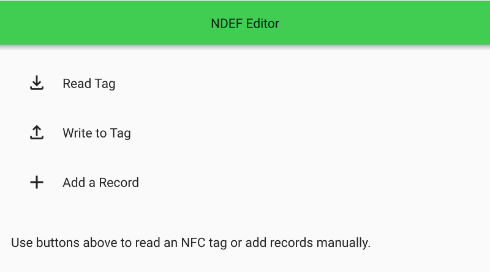

NDEF Editor Example
An example of reading and writing NFC Data Exchange Format (NDEF) messages to NFC Forum Tags.
The NDEF Editor example reads and writes NFC Data Exchange Format (NDEF) messages to NFC Forum Tags. NDEF messages can be composed by adding text and URI records. Records can be deleted by swiping them to the left.

See also Qt NFC.